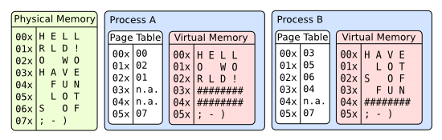
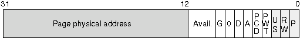

Chapter 8: Theory: physical and virtual memory
In the chapter related to the GDT, we saw that using segmentation a physical memory address is calculated using a segment selector and an offset.
In this chapter, we are going to implement paging, paging will translate a linear address from segmentation into a physical address.
Why do we need paging?
Paging will allow our kernel to:
- use the hard-drive as a memory and not be limited by the machine ram memory limit
- to have a unique memory space for each process
- to allow and unallow memory space in a dynamic way
In a paged system, each process may execute in its own 4gb area of memory, without any chance of effecting any other process's memory, or the kernel's. It simplifies multitasking.

How does it work?
The translation of a linear address to a physical address is done in multiple steps:
- The processor use the registry
CR3to know the physical address of the pages directory. - The first 10 bits of the linear address represent an offset (between 0 and 1023), pointing to an entry in the pages directory. This entry contains the physical address of a pages table.
- the next 10 bits of the linear address represent an offset, pointing to an entry in the pages table. This entry is pointing to a 4ko page.
- The last 12 bits of the linear address represent an offset (between 0 and 4095), which indicates the position in the 4ko page.
Format for pages table and directory
The two types of entries (table and directory) look like the same. Only the field in gray will be used in our OS.


P: indicate if the page or table is in physical memoryR/W: indicate if the page or table is accessible in writting (equals 1)U/S: equals 1 to allow access to non-preferred tasksA: indicate if the page or table was accessedD: (only for pages table) indicate if the page was writtenPS(only for pages directory) indicate the size of pages:- 0 = 4kb
- 1 = 4mb
Note: Physical addresses in the pages diretcory or pages table are written using 20 bits because these addresses are aligned on 4kb, so the last 12bits should be equal to 0.
- A pages directory or pages table used 1024*4 = 4096 bytes = 4k
- A pages table can address 1024 * 4k = 4 Mb
- A pages directory can address 1024 (1024 4k) = 4 Gb
How to enable pagination?
To enable pagination, we just need to set bit 31 of the CR0registry to 1:
asm(" mov %%cr0, %%eax; \
or %1, %%eax; \
mov %%eax, %%cr0" \
:: "i"(0x80000000));But before, we need to initialize our pages directory with at least one pages table.
Identity Mapping
With the identity mapping model, the page will apply only to the kernel as the first 4 MB of virtual memory coincide with the first 4 MB of physical memory:

This model is simple: the first virtual memory page coincide to the first page in physical memory, the second page coincide to the second page on physical memory and so on ...